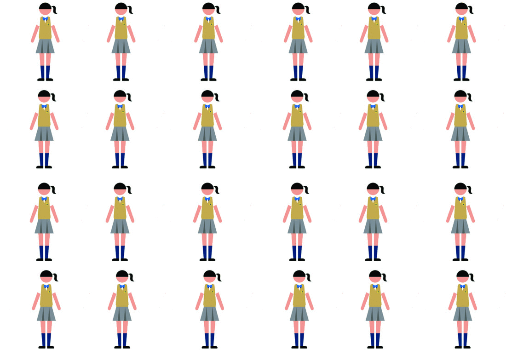
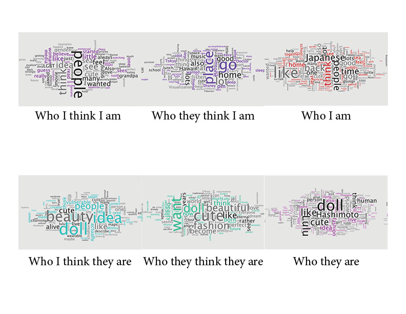

About Mapping the Other
Core Studio System
Mapping the Other is the project done in the Core Studio System that we seek better understanding of other through research, interviewing others from and come up with Data Visualization that shows connection of this project and project of mapping self, three modboard, and three studies:
1. Who you think they are
For the other, I chose wearable doll artist call Lulu Hashimoto
Lulu Hashimoto's WebSite20 Sorce Reseach Summery
Growing up I feel like I wanted to become like a doll or been told that you are like a doll from one of your relatives; However, actually becoming the doll itself was impossible. Or maybe doll being alive was imposible. Lulu Hashimoto was created by artist call milina, fashion creator in Japan. As an artist, she states that “ART THAT CAN BE WORN. And her is CUTE by girls For girls. lulu just looks like a doll. But actually, she is alive!”. I think what she wants to say is that art pieces don’t stop at the object but continue to our body and our human body can become one of the materials of the object as well. That materiality she is exploring is very interesting to me. Doll, lulu, become alive because there is a human being inside but also that human beings identity will be covered by the doll in someway. But still, the way she moves is affected by the person who is wearing the doll and the creator of the Lulu chose the person who wears Lulu by the occasion (like when it’s for the dancing she chose dancer) and only thing she tell that person is to act like your idea of who is Lulu. So then where are the line of human and doll or line in being alive and being an object And the creator also owns a store that sells the items that are related to the Lulu, so that people need to become a doll is interesting to me too.
Other is that is interesting to me about Lulu the doll is that idea of “CUTE”. Lulu is made by Millina’s idea of beauty and idea of cuteness. In so many cultures I think Kawaii (the Japanese word for cute) is described as charming, vulnerable, shy and childlike. But is the idea of cute actually just charming, vulnerable, shy and childlike for Millina and Lulu who stands for the idea of “cute”? In some of the video Millina uploaded on the internet, she talks about how vulnerable and uncomfortable for her to live in the Japanese school where being normal, acting like others were wanted by teachers and how she felt the teacher didn’t even look at her as a human being when she disobeyed that idealistic behavior. I think she gains the power and be able to express herself and what she feels wrong in the society. In another video I watched she talked about how beauty standard in Japan only let people who are born with the beauty to be beautiful. She describes Lulu as the wearable magic, the magic that let her impossible dream come true. She describes the world she lives in as the romantic place that her dreams come true because her idea of beauty resonates with someone else’s idea of beauty. Which shows that the idea of beauty differs in people than what is beauty standard? Also, what is the power of beauty?
I also read an article Fukusuke Fukuda, a college professor, wrote about Doll Media and how talking about who is in the doll is such a new way to approach. That sensation of the audience feeling like “I could be Lulu too” is a new concept that is interesting and the way this Lulu project could grow. Also, he talks about how in the VR, Game, and Virtual youtube channel people pretend to be beautiful women and how that shows something deeper about that person.
SAITO, KUMIKO. “Desire in Subtext: Gender, Fandom, and Women’s Male-Male Homoerotic Parodies in Contemporary Japan.” Mechademia, vol. 6, 2011, pp. 171–191. JSTOR, JSTOR, www.jstor.org/stable/41511578.
“MMNインタビュー：ドール着ぐるみ初のモデル‘橋本ルル‘プロデューサーインタビュー「‘可愛く生きたい‘の極致」| Chatting With the Producer of the Very First “Doll” Fashion Model, Lulu Hashimoto.” MOSHI MOSHI NIPPON | もしもしにっぽん, 16 Aug. 2017, www.moshimoshi-nippon.jp/ja/18367.
RuptlyTV. “Not Quite Human, Not Quite Doll… Fashion Model Causes a Stir in Tokyo.” YouTube, Ruptly, 15 Sept. 2017, link
KAWAIIpateen. “Melt × KAWAII PATEEN with Lulu Hashimoto【with English Sub】｜Melt × KAWAII-PATEEN！橋本ルルインタビュー！.” YouTube, KAWAII PATEEN, 12 July 2017, www.youtube.com/watch?v=BeJhUIZb4_M.
福田フクスケ / Fukusuke Fukuda . “話題のドールモデル・橋本ルルが早大の人気講義に降臨。人間なの？人形なの？ | Wearable Doll Lulu Hashimoto Appeared in College Discussion. Is She Human? Is She Doll? .” 日刊SPA!, 日刊SPA!, 25 May 2018, nikkan-spa.jp/1478090.
菊地 浩平 | Kouhei Kikuchi . “最強？人形ホラーとしての『アンパンマン』| Strongest? ‘Anpanman’ as a Doll Horror.” 教育×WASEDA ONLINE, www.yomiuri.co.jp/adv/wol/opinion/culture_170227.html.
Pavlik-Malone, Lisa. Being Doll : A Study of Youngness & Oldness at Interface, Cambridge Scholars Publishing, 2013. ProQuest Ebook Central, https://ebookcentral-proquest-com.libproxy.newschool.edu/lib/newschool/detail.action?docID=1753477.
“Living Doll; Beauty.” Sunday Times [London, England], 16 Oct. 2005, p. 39. Academic OneFile, http://link.galegroup.com.libproxy.newschool.edu/apps/doc/A137648063/AONE?u=nysl_me_newsch&sid=AONE&xid=d86e1e98. Accessed 30 Sept. 2018.
Hua, WEN. Buying Beauty : Cosmetic Surgery in China, Hong Kong University Press, 2013. ProQuest Ebook Central, https://ebookcentral-proquest-com.libproxy.newschool.edu/lib/newschool/detail.action?docID=1115451.
Weintraub, Anne. “Beauty News: Doll Face.” Vogue Mar 01 1997: 374. ProQuest. 30 Sep. 2018 .
Interview
For the interview, I interviewed people who follow her on twitter and who also went to her meeting or event before. Who have seen her in life before. Some of them are also wear doll mask, or wearable skin, most of them do not use their voice to communicate because they are doll. Also people didn't felt comfortable getting interviewed and recorded by people they don't know.
Questions
1.Who do you think she is?
2.What do you think they want to be?
3.How did you first encounter her?
4.Why do you follow her?
5.How does she make you feel?
6.What do you think her porpose is?
7.Do you think she is alive? Or is she just a dool or person wearing a mask?
8.What make her so appering?
9.What do you think different about her from you?
10.What do you think is a most important thing about the project?
Person one answers
she like to be not mention her true name
1. an angel
2. to be who she is.
3. on Twitter just saw her by chance
4. she changed me, i wanted to be her
5. I'm not alone.
6. to be her self. Be someone who she wanted to be.
7. She is alive. Lulu is a girl because she says so and she hope to be.
8. It is also beautiful that the person herself is too beautiful, longing and respect is worth living surrounded by cute things
9. she has different ideal of beauty
10. that she gave me hope to be who I truly want to be.
Person two answers
she like to be not mention her true name
1.in between doll and human.
2. to become living doll
3. On the youtube, she was in the music video
4. My life was changed when I saw her, I though she was just short time project but as I learned more about her, I saw similality in my life, in my feeling. I didn't came to this life with a beauty I hoped to but she gives me a hope that I cou;d get closer to practicing the beauty I belive
5. Although the world view was not rough, it was a world I was not interested in, but I was blessed by looking at Lulu
6. to be her self. Also find people like her to tell that we are not alone.
7. Doll costume is an extension of makeup and fashion, her inside is turned inside out
8. mysterious time lag arising there is also the prophet conveying the divine propagation to the people It seems somewhere sacred
9. she is the teacher, my idol, who I want to be.
10. she will give dreams and hope to girls suffering from complexes around the world like she did to me
Person three answer
1. A charactor
2. Extention of someone's ideal to be a beautiful doll.
3. on the TV.
4. she is very interesting and I like to seek though where this project is going.
5. It is like a French doll that lives like a living French doll, covering the head with a doll face doll and wearing tights imitating a spherical joint doll in his or her limbs.
6. To live her life, to say it is ok to be your self and you will find where you can be you.
7. Hashimoto Lulu was alive. Writing a signature on my T - shirt or where do you see the front? When I asked, it was such a pretty charming creativity that I was laughing like "being a secret" with such a cute and tiny voice that moved so graciously. If I am not mistake i wonder where she accepts her
8. I think that there is a possibility of this project in the place that "I may be Lulu Hashimoto as well".
9. she is someone who was able to make her dream come true. I still have truble being beautiful in the way I define beauty.
10. Surely it is not an extension of a doll, but an extension of a human being and makeup or fashion.
Mood Board

3 studies
Who I think They Are

I think I saw her story doing research about her. being boxed in the society who tells you have to look like others, act like other, and denided to be indivisual. But she found who she is by meeting to things she felt beautiful, then she moved on to what makes her feel beautiful. With that confort, she feels beauty that she defin, beauty that is personalized to her.
who they think they are
to learn about her and how she, Lulu,thought about her; I went though every tweet she ever made and also when though all the tweet the director ever made.
I think Lulu is being that aim to be a shell for someone to become who they want to be, one day she is a model, another day she is a dancer. she can never be able to definded perfectly. The term Lulu Hashimoto is a moving, can be changing. Lulu's act and speech change depeands on the person inside she is keep changing, getting effected by things and people she encounters.
I wanted to forcus how the srtsit in the interview, how Lulu can be you, anyone. She might be just the mask or skin but who is inside matters the most. That is the most part of the project. That is why I wanted to have her face not totally on face but close enogh so it is hard to see your self. I believe we all wear some kind of mask on us to be confortable around people, and that could be Lulu.
Data Visualization

Because I based most of my study based on the wording people used discribe people so I made a program that gothough a text to count a number of time same word was used in the text, and used that program to make a visualization to show which word were used most